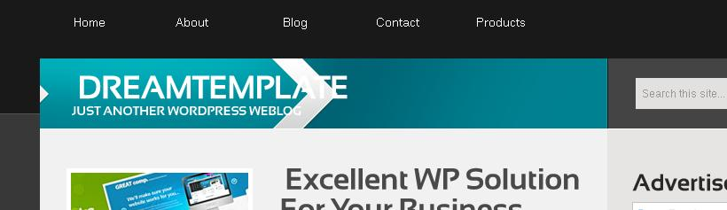

Сторінку збережено для історії.
Дана інформація була актуальна на 2010-2012 роки, описує тогочасні труднощі верстки, відсутність підтримки CSS3 у браузерах, браузери рендерили стилі трохи по-різному.
В деяких моментах проглядається моя недосвідченість, особливо у роботі з CMS. Інші моменти продиктовані прагматичністю, бажанням спростити собі роботу, оскільки вартість кожного шаблону оцінювалась всього у десяток-другий доларів і не хотілося витрачати на них забагато часу.
Дизайнерам
Зміст:
§ 1. Загальні положення
- § 1-1. Фон.
- § 1-2. Тіні.
- § 1-3. Вертикальні лінії у футері.
- § 1-4. Субменю.
- § 1-5. Ширина контенту.
- § 1-6. Бекграунд лого.
- § 1-7. Нестандартні шрифти (Cufon).
- § 1-8. Обмеження на використання нестандартних шрифтів (Cufon).
- § 1-9. Заборона використання нестандартних шрифтів (Cufon).
- § 1-10. Жирність шрифтів.
- § 1-11. Вертикальні лінії у лого.
- § 1-12. Жирний і звичайний шрифт у меню.
- § 1-13. Рваний дизайн.
§ 2. Сімпл-дизайни
§ 3. Вордпрес
§ 4. Joomla
Загальні положення
§ 1-1. Фон.
Фон повинен повторюватись, тягнутись, бути зправа і зліва одного тону або складатись з одного зображення по центру.
Приклади проблемного фону:
Фон не повторюється (має дугу знизу), неможливо виділити елемент щоб розмножити,
виглядає незавершеним, якщо розміщений посередині окремим зображенням:
Світла пляма розташована безпосередньо у картинці, а не ефектом чи окремим шаром,
тобто її неможливо відключити і вирізати елемент для повторення фону:
Фон погано повторюється, важко знайти місце стикування (або його взагалі немає):
§ 1-2. Тіні.
Тіні не повинні виступати вправо і вліво за межі контенту.
Навколо картинок чи блоків тіні товщиною в 2-4 пікселя зробити дуже важко. Верстальник їх видаляє або робить їх бордером одного кольору товщиною 2-3 пікселя.
Приклад проблеми:
§ 1-3. Вертикальні лінії у футері.
Вертикальні лінії однакової висоти між блоками інформації зробити важко. Висота блока інформації залежить від вмісту блока, висота ліній буде залежити від висоти блока.
Приклад проблеми:
Різна виоста ліній, в залежності від кількості інформації в блоці:
§ 1-4. Субменю.
Субменю повинно розташовуватись впритик до кнопки меню. Якщо субменю розташувати на 2-6 пікселів нижже - користувач не зможе перевести на нього курсор миші, тому що воно пропадатиме.
Приклад проблеми:
§ 1-5. Ширина контенту.
Ширина контентної частини має бути на всіх дизайнах пакету однаковою, 960px, 980px, а не скакати від темплейта до темплейта.
Особливо важливо, щоб ширина контенту на головній сторінці, блозі і інших сабпейджах була однаковою.
Фоновий колір контенту, тіні також входять в ширину контенту, не повині виступати за вищезазначені розміри.
§ 1-6. Бекграунд лого.
Необхідно розраховувати, що логотип може складатись більше ніж з 4-5-6 літер.
Приклад фейла:

§ 1-7. Нестандартні шрифти (Cufon).
Для більшості елементів сторінки можна використовувати нестандартні шрифти.
Можна використовувати декілька різних шрифтів, а також різні стилі шрифта - звичайний, жирний, наклонний.
Надписи цими шрифтами можна робити з тінню, вертикальним градієнтом (в межах розумного!!!):
§ 1-8. Обмеження на використання нестандартних шрифтів (Cufon).
Намагайся не використовувати градієнти і тіні у сімпл-дизайнах.
Якщо нестандартний шрифт використовується у меню - пункт меню не повинен змінювати кольору шрифта, лише фон.
Ява-скрипт Куфон зміщує надпис на декілька пікселів вліво і вниз або вверх.
Слоган під лого теж повинен бути тим самим шрифтом.
Багатостроковий текст буде виглядати
зліпленим - немає можливості виставити
міжстроковий інтервал, він буде завжди мінімальним.
Також не працює підкреслення - underline (в деяких випадках).
Шрифт Myriad Pro, конвертований у скрипт, має розмір 700-750 Кб, його завантаження триватиме 5-15 секунд у власників швидких каналів інтернету.
§ 1-9. Заборона використання нестандартних шрифтів (Cufon).
Значна частина слайдерів не підтримують скрипт Куфон, тому немає можливості у слайдері робити надписи нестандартними шрифтами.
Не використовуй нестандартні шрифти у випадаючих меню - розлазиться дизайн.
§ 1-10. Жирність шрифтів.
250w - light
400w - normal, regular
600w - semibold
800w - bold
900w - black
§ 1-11. Вертикальні лінії у лого.
Не використовуй вертикальні лінії посередині логотипу.
Лінію можна привязати до правого краю лого - тоді вона буде намальована після слогана мілким шрифтом.
Лінію можна привязати зліва слогана мілким шрифтом - тоді вона буде у висоту шрифта слогана, а не основного лого.
§ 1-12. Жирний і звичайний шрифт у меню.
Не використовуй для виділення поточного чи onhover пункту меню жирний шрифт.
Таке виділення можна використовувати ЛИШЕ у випадку фіксованої (однакової) ширини всіх пунктів меню.
Якщо мишу наводити на пункти меню - ширина меню буде змінюватись і наступні пункти меню скакатимуть:
§ 1-13. Рваний дизайн.
Його неможливо порізати.
Він не тягнеться.
Його неможливо адаптувати до потреб користувача.
До того ж в меню використовується звичайний і жирний стилі шрифта.
Сімпл-дизайни
§ 2-1. Контент.
В сімпл-дизайнах контент має бути максимально однаковий. Саб-пейджи створюватимуться автоматично програмою, їх контент буде абсолютно ідентичний, шапка, футер і бокова панель копіюються з головної сторінки.
Не роби над заголовками H2 велику шапку, що перекриває теги і коментарі, в сабпейджах немає тегів і коментарів:
Не винось коментар вліво перед заголовком H2, на саб-пейджах немає коментарів:
§ 2-2. Меню.
В сімпл-дизайнах меню повинно бути простим, без виносних елементів, простої форми.
Приклад складного меню (виносні елементи):
Приклад складного меню (виносні елементи - лампочка зверху; підсвічування дугою неможливо приладнати до різної ширини кнопок):
§ 2-3. Прозорості.
В сімплах не використовуй прозорості. Просто не використовуй прозорості. Без "але".
§ 2-4. Подвійний бордер.
В сімплах не використовуй подвійні бордери.
Подвійні бордери можна використовувати навколо зображень ЛИШЕ якщо зображення без скруглених кутів і якщо у зображення НЕМАЄ ТІНІ знизу.
Вордпрес
§ 3-1. Права колонка.
Ширина правої колонки має бути не менше 260px, що зумовлено шириною банерів.
Joomla
§ 4-1. Блог-пости.
Перший пост може дизайном відрізнятись від постів, що йдуть нижче - мати інший колір фону чи тла, рамку...
Обмеження на дизайн:

- Блог-пост поділяється на 2 однаковісінькі за оформленням блоки, виділені червоною рамкою. У даному випадку це означає, що "загин листочка", виділений жирним зеленим колом, також відобразиться і на місці зеленого кола з тонкої лінії.
- Окремі стилі і фон можна задавати тільки для блоків, виділених синіми овалами, фон приблизно в межах овалу. Для блока, закресленого синім, стиль не передбачено, тому фону у нього бути не може.
- Іконки зверху справа (виділені рожевим овалом) є стандартними іконками в самій Joomla, тому їх змінювати не можна (якщо їх змінити - вони зміняться абсолютно на всіх сайтах, встановлених на систему).
§ 4-2. Елементи форм.
Радіобатони і чекбокси використовуй виключно стандартного вигляду.
Форма пошуку не має кнопки. Напис "Search..." виключно всередині поля вводу.
§ 4-2. Колонка гаджетів.
У гаджетів в колонці зправа (зліва) дизайн має бути простий, однаковий, без тіней. Найкраще, якщо фон і рамки взагалі не задані. Фон під заголовками може бути, але дуже бажано, щоб він не був широкий, не виступав за ширину колонки.
Приклад (вертикальні зелені лінії - ширина колонки):